Hazel 游戏引擎笔记 015：把 Dear ImGui 接入引擎
本节来源：The Cherno 游戏引擎系列第 15 讲“ImGui”，时长约 27 分 57 秒。
原课程与 Hazel 代码作者：The Cherno。代码参考提交：c65520c。
本文由视频字幕重构、翻译并整理，不是官方教材；术语和代码以原视频及同期 Hazel 仓库为准。
本节目标
上一讲加入 Glad 后，Hazel 已经能够加载现代 OpenGL 函数。本节把 Dear ImGui 接入窗口，第一次真正在 Hazel 窗口里绘制 UI。
本讲采用明确的三阶段原则：
- Make it work：先让 ImGui 显示出来；
- Make it right：以后让 ImGui 渲染经过 Hazel 自己的 Renderer；
- Make it fast：最后再处理性能和更完整的抽象。
当前处于第一阶段，因此代码被称为一次“hack”：
- 直接包含 GLFW，并使用 ImGui 的 OpenGL3 示例渲染器；
- 直接包含 GLFW 和 Glad；
- 暂时复制 ImGui 示例渲染器；
- 键盘映射暂时借用 ImGui 的 GLFW 示例；
- 先显示 Demo Window；
- 事件交互留到下一讲。
graph LR
A[Make it work<br/>本讲] --> B[Make it right<br/>经过 Hazel Renderer]
B --> C[Make it fast<br/>优化与重构]
为什么不等 Hazel 有自己的 Renderer 再做 ImGui？因为 ImGui 正是开发 Renderer 时的调试工具。先让 UI 显示出来，后续就能把渲染状态、纹理、着色器和性能数据直接显示在窗口中。
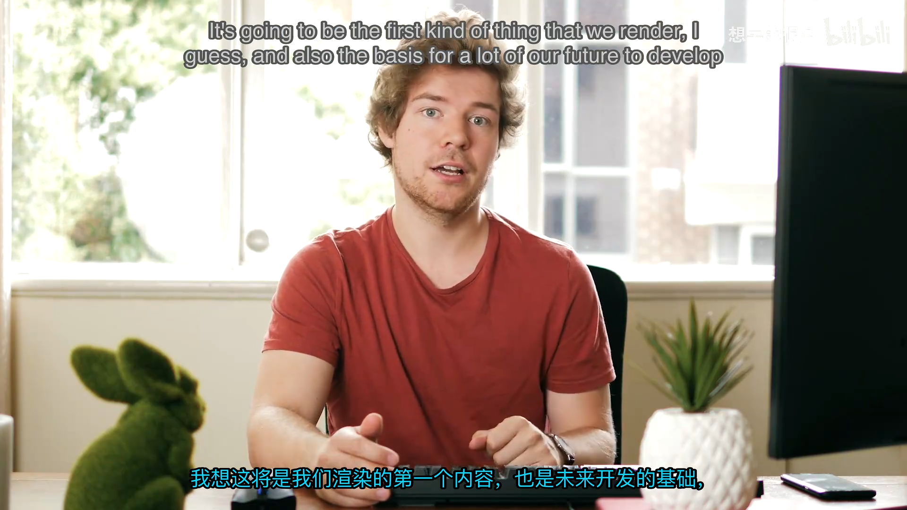
📷 ImGui 作为 Hazel 可视化和调试基础设施
回到原视频 (00:00:25)
1. 为什么先做 GUI，再做 Renderer
(参考时间: 00:01:30)
当前 ImGui 直接调用 OpenGL。理想设计是：
ImGui 后端
-> Hazel Renderer API
-> OpenGL / DirectX / Vulkan
但 Hazel 还没有自己的 Renderer。先写 Renderer，再写 ImGui，会让 Renderer 初期的调试非常困难；先接 ImGui，则可以：
- 在窗口中显示调试变量；
- 观察 Renderer 状态；
- 快速切换参数；
- 构建编辑器面板；
- 验证窗口、事件和 OpenGL 上下文是否正常。
因此本节接受临时耦合，之后再用 Hazel 的渲染抽象替换底层 OpenGL 调用。
2. 添加 ImGui 子模块
(参考时间: 00:02:26)
Cherno 使用自己维护的 Dear ImGui 分支，并为其准备了 Premake 文件。ImGui 与 GLFW 一样作为 Git 子模块加入：
git submodule add https://github.com/TheCherno/imgui Hazel/vendor/imgui
项目结构变为：
Hazel/vendor/
GLFW/
imgui/
spdlog/
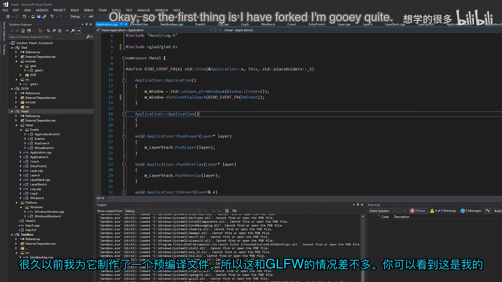
📷 ImGui 仓库及其 Premake 构建文件
回到原视频 (00:02:26)
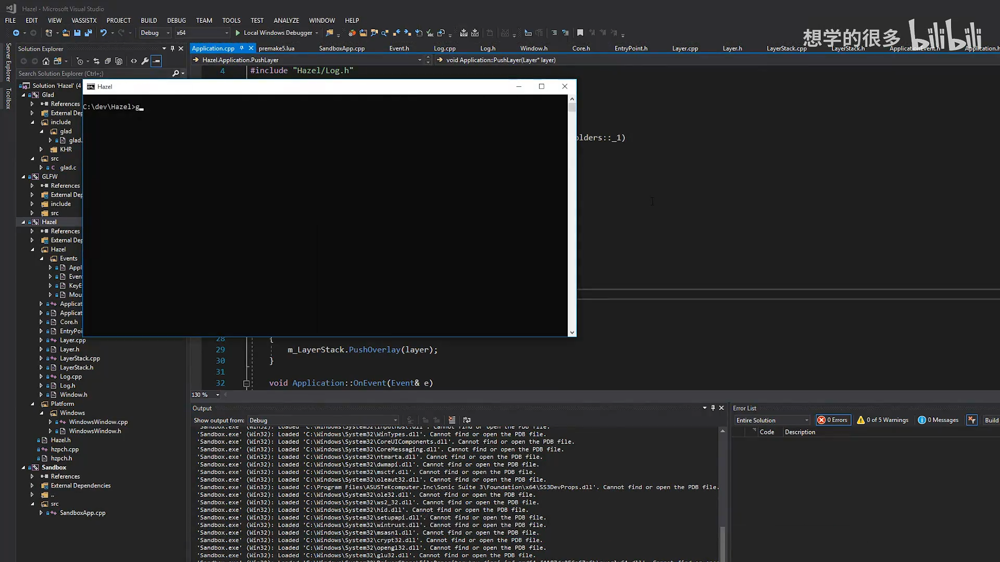
📷 通过 Git 子模块把 ImGui 放到 Hazel/vendor
回到原视频 (00:03:04)
3. Premake 接入
(参考时间: 00:03:37)
主 Premake 文件增加：
- ImGui 头文件目录；
- 引入 ImGui 的 Premake 文件；
- 让 Hazel 链接 ImGui 静态库。
概念配置如下：
IncludeDir["ImGui"] = "Hazel/vendor/imgui"
include "Hazel/vendor/imgui"
includedirs
{
"%{IncludeDir.ImGui}"
}
links
{
"ImGui"
}
第一次重新生成项目时遗漏了顶层 include "Hazel/vendor/imgui"，所以解决方案中没有 ImGui 项目。补上后再运行项目生成脚本，Visual Studio 中才出现 ImGui，并能在 Hazel 引用中看到它。
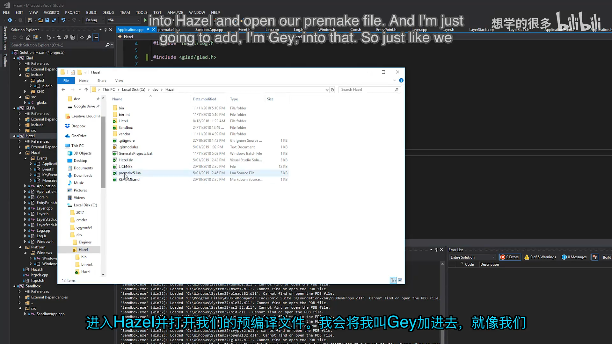
📷 Premake 增加 ImGui 包含路径、项目和链接
回到原视频 (00:03:37)
4. 创建 ImGuiLayer
(参考时间: 00:05:18)
ImGui 相关代码放在：
Hazel/src/Hazel/ImGui/ImGuiLayer.h
Hazel/src/Hazel/ImGui/ImGuiLayer.cpp
ImGuiLayer 继承上一讲的 Layer：
class HAZEL_API ImGuiLayer : public Layer
{
public:
ImGuiLayer();
~ImGuiLayer();
void OnAttach();
void OnDetach();
void OnUpdate();
void OnEvent(Event& event);
private:
float m_Time = 0.0f;
};
它将作为 Overlay 推入应用，确保最后渲染并最先收到事件：
PushOverlay(new ImGuiLayer());
虽然 ImGui 常被看作调试工具，Cherno 暂时没有把目录直接命名为 Debug，因为 ImGui 也可能承担正式工具界面甚至应用 UI。
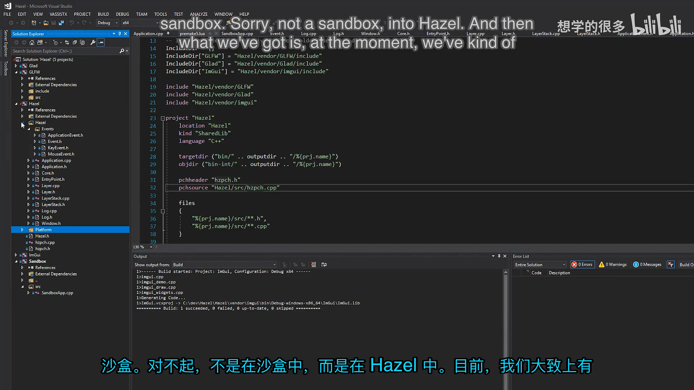
📷 ImGuiLayer 继承 Layer 并覆盖生命周期回调
回到原视频 (00:05:18)
5. 复制 ImGui 示例后端
(参考时间: 00:09:12)
Dear ImGui 本身负责控件、布局和绘制数据，窗口集成与图形 API 调用分别由后端处理。本节参考两份官方示例：
imgui_impl_glfw：窗口、输入和按键映射；imgui_impl_opengl3：生成 OpenGL 绘制调用。
Cherno 暂时把 OpenGL3 示例复制到：
Hazel/src/Platform/OpenGL/ImGuiOpenGLRenderer.h
Hazel/src/Platform/OpenGL/ImGuiOpenGLRenderer.cpp
这些文件保留“示例代码”的命名风格，提醒开发者它们是临时实现，最终应经过 Hazel Renderer。
编译时出现两个问题：
- Premake 中错误写成了不存在的 ImGui include 子目录；
- 复制的 OpenGL 渲染器需要包含 Glad。
修正包含路径并加入 Glad 后，临时渲染器编译成功。
graph TD
A[ImGuiLayer] -.参考，尚未接入.-> B[imgui_impl_glfw]
A --> C[imgui_impl_opengl3]
B --> D[GLFW 窗口与输入]
C --> E[Glad / OpenGL]
A --> F[ImGui Context]
F --> G[UI 控件与 DrawData]
G --> C
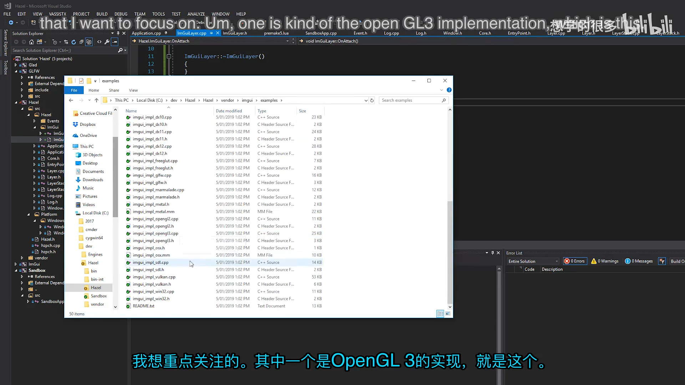
📷 复制 ImGui 的 OpenGL3 示例渲染器并修正包含路径
回到原视频 (00:09:12)
6. OnAttach：初始化 ImGui 与 OpenGL3 后端
(参考时间: 00:13:10)
Layer 被加入应用时调用 OnAttach()。此时窗口和 OpenGL 上下文已经存在。
初始化过程包括：
- 创建 ImGui Context；
- 设置深色样式；
- 取得
ImGuiIO； - 设置后端能力标志；
- 安装临时 GLFW 键码映射；
- 初始化 OpenGL3 后端。
6.1 创建 Context 与样式
ImGui::CreateContext();
ImGui::StyleColorsDark();
6.2 后端能力
ImGuiIO& io = ImGui::GetIO();
io.BackendFlags |=
ImGuiBackendFlags_HasMouseCursors;
io.BackendFlags |=
ImGuiBackendFlags_HasSetMousePos;
这些标志告诉 ImGui：后端能够设置鼠标位置和鼠标光标。当前尚不能完整实现鼠标光标纹理，因此只是先声明能力。
6.3 临时键码映射
ImGui 键盘输入需要把窗口系统的键码转换成 ImGui 索引。GLFW 后端示例包含一份映射表，本节直接借用。
这是明显的临时方案：
- Hazel 最终应有自己的键码枚举；
- ImGuiLayer 不应直接依赖 GLFW；
- 输入系统还需要支持“当前键是否按下”的轮询。
6.4 初始化 OpenGL3 后端
ImGui_ImplOpenGL3_Init("#version 410");
GLSL 版本暂时使用 410，与项目当前 OpenGL 环境和着色器版本保持一致。这里的 ImGui_ImplOpenGL3_Init() 来自刚刚复制进 Hazel 的 OpenGL3 示例渲染器，并不是完整的 GLFW 平台后端。
本讲还没有把 imgui_impl_glfw 中的窗口回调接进来，也没有调用 ImGui_ImplGlfw_InitForOpenGL()；GLFW 在 OnAttach() 中主要提供键码常量和 glfwGetTime()。这解释了为什么 Demo Window 能显示，却暂时不能交互。
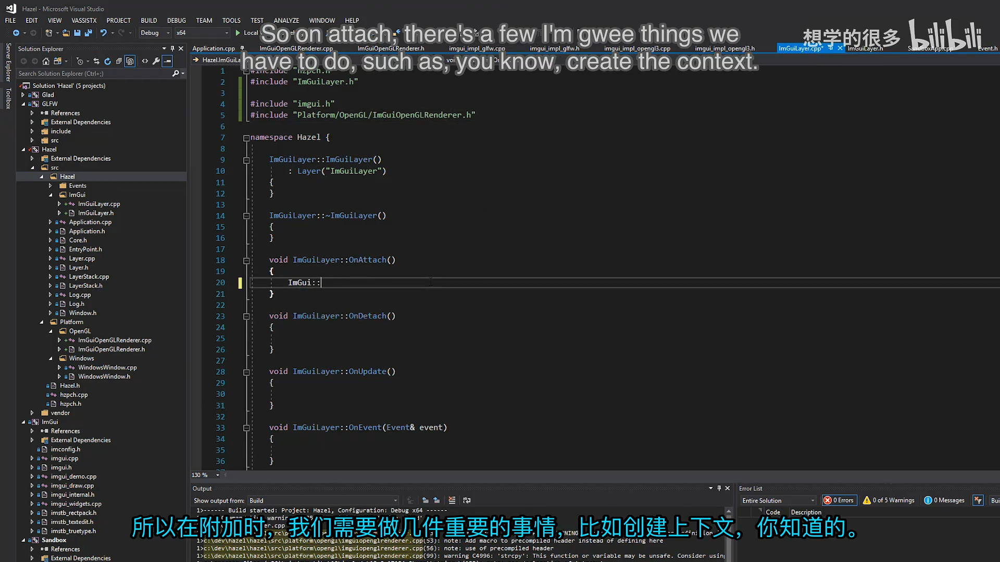
📷 OnAttach 中创建 ImGui Context 和配置后端
回到原视频 (00:13:10)
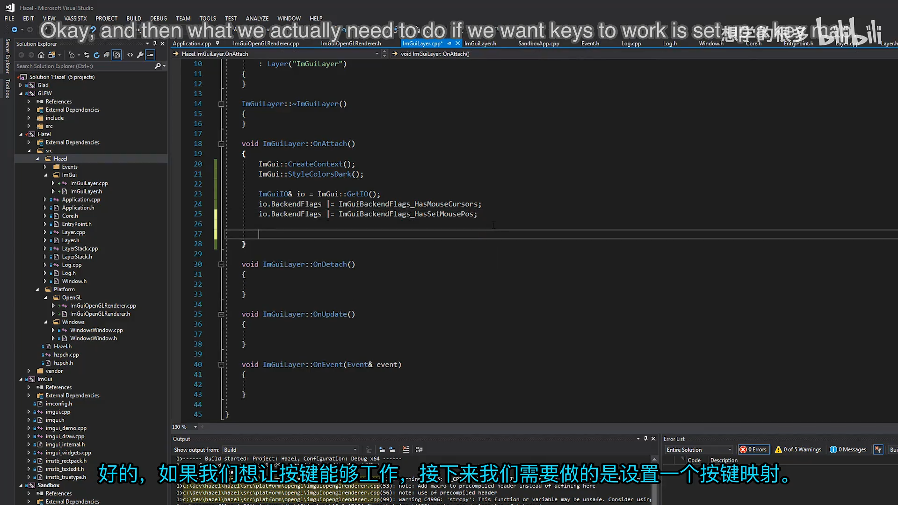
📷 临时借用 ImGui GLFW 示例的键码映射
回到原视频 (00:15:17)
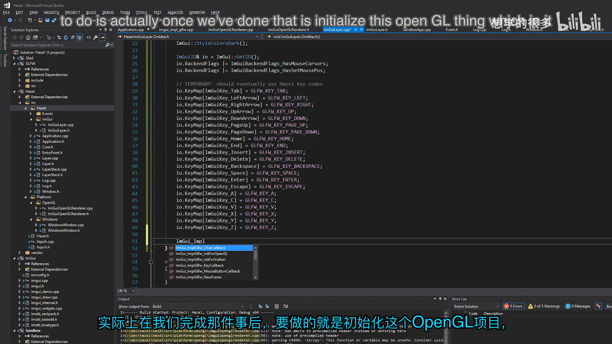
📷 初始化 OpenGL3 示例渲染器
回到原视频 (00:16:32)
7. OnDetach：暂时留空
(参考时间: 00:16:58)
虽然 ImGuiLayer 声明并实现了 OnDetach()，但这一版函数体是空的：
void ImGuiLayer::OnDetach()
{
}
当前目标仍然只是“先让它工作”，所以没有在移除 Layer 时调用 ImGui_ImplOpenGL3_Shutdown() 或 ImGui::DestroyContext()，析构函数也是空的。
编者说明：这属于本讲的临时技术债。实际应用在移除 ImGuiLayer 或关闭程序时，应按照初始化顺序的逆序释放后端资源并销毁 Context，否则全局 Context 和图形资源可能一直保留到进程结束。
8. OnUpdate：每帧流程
(参考时间: 00:17:02)
ImGui 每帧遵循固定顺序：
设置 DisplaySize
-> 更新 DeltaTime
NewFrame
-> 声明 UI
-> Render
-> 提交 DrawData
框架代码对应：
ImGuiIO& io = ImGui::GetIO();
Application& app = Application::Get();
io.DisplaySize = ImVec2(
app.GetWindow().GetWidth(),
app.GetWindow().GetHeight());
float time = (float)glfwGetTime();
io.DeltaTime = m_Time > 0.0f
? (time - m_Time)
: (1.0f / 60.0f);
m_Time = time;
ImGui_ImplOpenGL3_NewFrame();
ImGui::NewFrame();
static bool show = true;
ImGui::ShowDemoWindow(&show);
ImGui::Render();
ImGui_ImplOpenGL3_RenderDrawData(
ImGui::GetDrawData());
sequenceDiagram
participant APP as Application Loop
participant L as ImGuiLayer
participant B as OpenGL3 Backend
participant I as ImGui
participant GL as OpenGL
APP->>L: OnUpdate
L->>I: 设置 DisplaySize / DeltaTime
L->>B: NewFrame
L->>I: NewFrame
L->>I: ShowDemoWindow / UI
L->>I: Render
I-->>L: DrawData
L->>B: RenderDrawData
B->>GL: 绘制 UI
8.1 显示 Demo Window
ImGui 自带完整示例窗口，包含大量控件、布局和调试组件。最初设置一个布尔值控制是否显示 Demo Window，用它验证整个后端链路。
8.2 时间与 Delta Time
float time = (float)glfwGetTime();
ImGuiIO& io = ImGui::GetIO();
io.DeltaTime = m_Time > 0.0f
? time - m_Time
: 1.0f / 60.0f;
m_Time = time;
第一帧没有可靠的上一帧时间，因此用 1/60 秒作为默认值，避免 Delta Time 为零。
DisplaySize 和 DeltaTime 必须在 ImGui::NewFrame() 之前写入。第一次运行只修复了 OnAttach() 调用后，ImGui 又触发了 Invalid DisplaySize value 断言；查看调用栈后，Cherno 把窗口尺寸和计时代码移动到 ImGui_ImplOpenGL3_NewFrame() 与 ImGui::NewFrame() 之前，问题才消失。
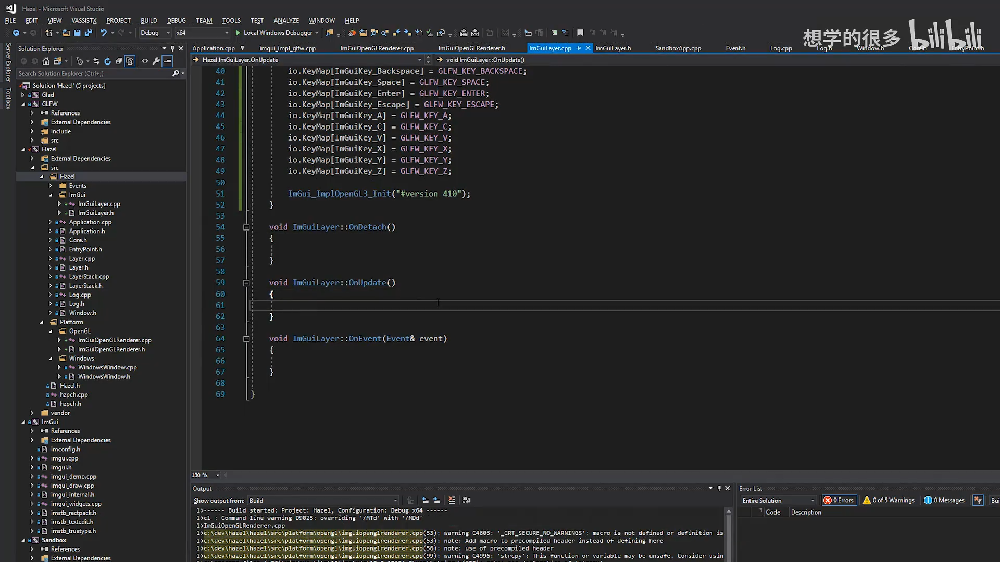
📷 OnUpdate 中执行 NewFrame、Render 和 RenderDrawData
回到原视频 (00:17:02)
9. DisplaySize 与 Application 单例
(参考时间: 00:19:32)
ImGui 需要知道窗口客户区大小，否则会报告无效 DisplaySize。初始化顺序修正后，设置方式为：
auto& app = Application::Get();
auto& window = app.GetWindow();
io.DisplaySize = ImVec2(
(float)window.GetWidth(),
(float)window.GetHeight());
Application 之前没有全局访问入口，因此本节增加：
static Application& Get() { return *s_Instance; }
private:
static Application* s_Instance;
构造函数中：
HZ_CORE_ASSERT(s_Instance == nullptr,
"Application already exists!");
s_Instance = this;
这明确表达“一个进程只应有一个 Application”的约束，同时让 ImGuiLayer 能读取当前窗口尺寸。
9.1 Application 增加 GetWindow
窗口尺寸由 Application 持有的 Window 提供：
inline Window& GetWindow()
{
return *m_Window;
}
ImGuiLayer 无需知道窗口由 GLFW 还是其他平台实现。
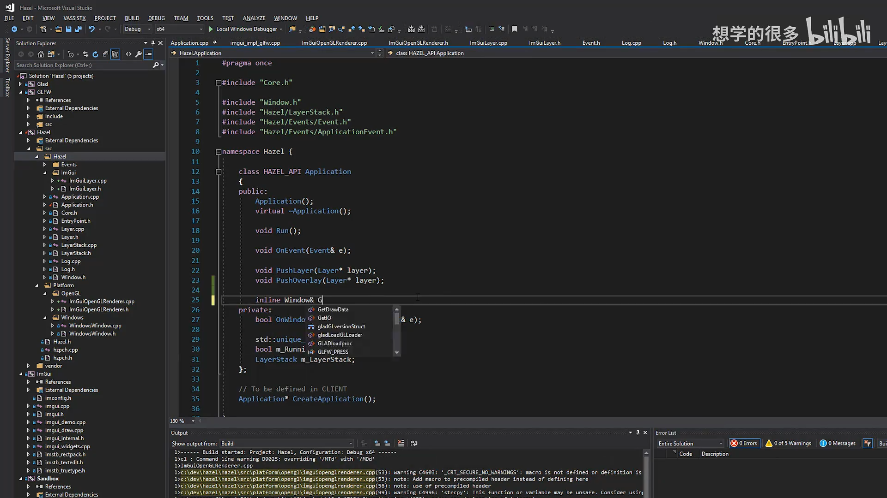
📷 Application 增加单例访问与窗口尺寸查询
回到原视频 (00:19:32)
10. 公开 ImGuiLayer 并在 Sandbox 中作为 Overlay
(参考时间: 00:22:30)
为了让客户端创建 ImGuiLayer，Hazel.h 增加公开包含：
#include "Hazel/ImGui/ImGuiLayer.h"
Sandbox 中把原先的 ExampleLayer 和 ImGuiLayer 一起加入：
Sandbox()
{
PushLayer(new ExampleLayer());
PushOverlay(new ImGuiLayer());
}
ImGuiLayer 使用 Overlay：
- 在普通层之后渲染；
- 在事件传播中优先收到事件；
- 未来 UI 处理事件后，可以阻止游戏层收到同一次输入。
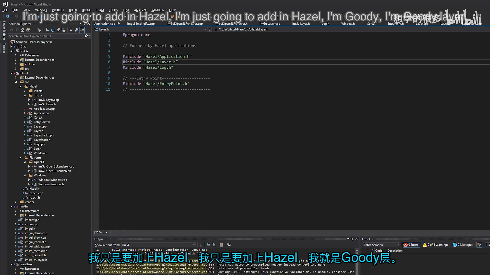
📷 Hazel.h 公开 ImGuiLayer
回到原视频 (00:22:30)
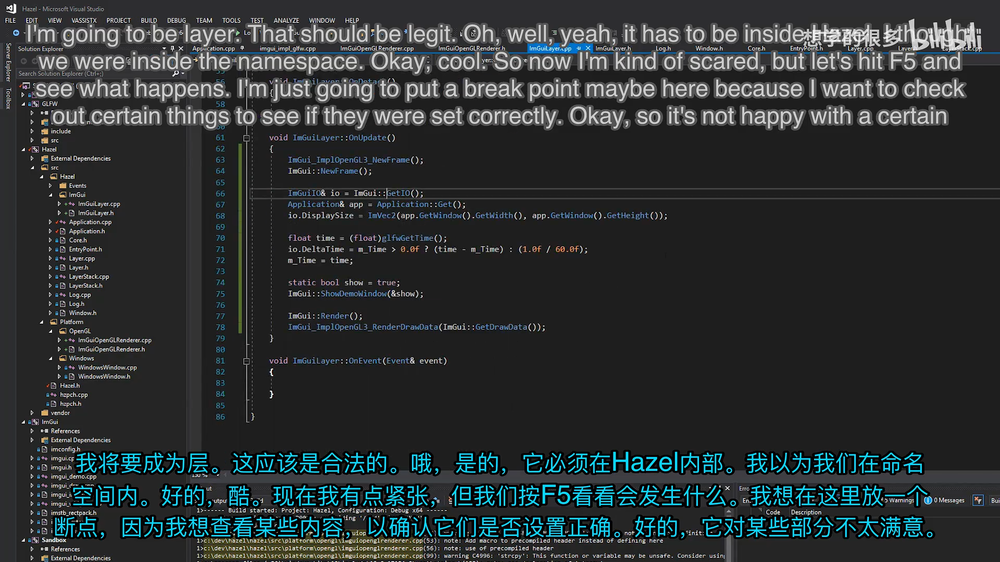
📷 Sandbox 把 ImGuiLayer 作为 Overlay 推入应用
回到原视频 (00:23:13)
10.1 链接错误：导出 ImGuiLayer
第一次编译 Sandbox 时出现链接错误，提示找不到 ImGuiLayer 的无参数构造函数。实现明明已经存在，原因是类没有从 Hazel DLL 导出。
在类声明上加入 HAZEL_API 后，构造函数、析构函数和其它成员才会被正确导出，Sandbox 可以跨 DLL 边界创建 ImGuiLayer：
class HAZEL_API ImGuiLayer : public Layer
这个错误说明：只要客户端要直接创建某个 Hazel 类型，类声明本身也必须处理好动态库导出，而不只是导出它继承的接口。
11. 修复 Layer 生命周期
(参考时间: 00:23:50)
链接问题修复后，程序继续运行，但 ImGui 立即触发断言。Cherno 判断 ImGui::CreateContext() 没有执行，随后发现 Application::PushLayer() 和 Application::PushOverlay() 只把 Layer 放进 LayerStack，却没有调用 OnAttach()。
修复后：
void Application::PushLayer(Layer* layer)
{
m_LayerStack.PushLayer(layer);
layer->OnAttach();
}
void Application::PushOverlay(Layer* layer)
{
m_LayerStack.PushOverlay(layer);
layer->OnAttach();
}
问题修复在 Application 的入栈入口，而不是 LayerStack 自身；LayerStack::PushLayer() 和 PushOverlay() 仍然只负责容器操作。这样 ImGuiLayer 加入应用时才会执行 OnAttach()，创建 ImGui Context 并初始化 OpenGL3 渲染器。
编者说明：同一版本中的 PopLayer() 与 PopOverlay() 还没有调用 OnDetach()。从对称的生命周期设计看，之后应在移除 Layer 前补上；但这不是本讲提交里已经完成的行为。
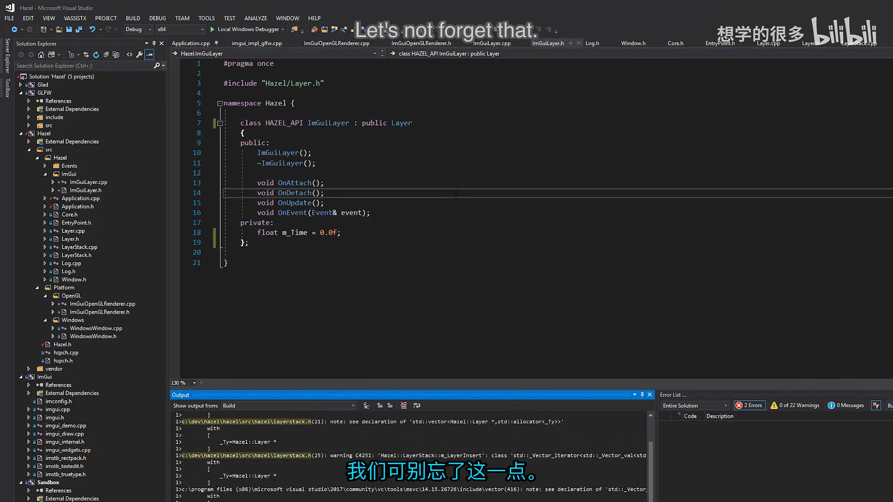
📷 修复 PushLayer 和 PushOverlay 没有调用 OnAttach 的问题
回到原视频 (00:23:50)
12. 第一次显示 ImGui
(参考时间: 00:25:00)
修复 OnAttach() 调用和 DisplaySize 初始化顺序后，Hazel 窗口中成功显示 ImGui Demo Window。
当前实现的状态：
| 能力 | 状态 |
|---|---|
| 创建 ImGui Context | 已完成 |
| GLFW 后端初始化 | 尚未接入 |
| OpenGL3 示例渲染器初始化 | 已完成 |
| 每帧 NewFrame / Render | 已完成 |
| Demo Window 渲染 | 已完成 |
| 鼠标移动、点击和键盘交互 | 尚未完成 |
| 鼠标光标形状 | 尚未完成 |
| 经过 Hazel Renderer | 后续重构 |
| OnDetach 资源清理 | 尚未实现 |
ImGui 已经能绘制，但无法移动、折叠或点击控件，因为没有把 Hazel 事件和 GLFW 输入状态同步到 ImGuiIO。鼠标位置、按钮状态、按键按下状态、修饰键和滚轮都需要在下一讲补齐。
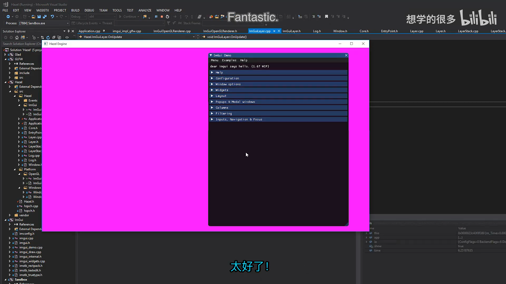
📷 Hazel 窗口中首次成功渲染 ImGui Demo Window
回到原视频 (00:25:00)
13. 事件交互的下一步
(参考时间: 00:25:11)
要让 ImGui 完全可交互，需要参考 imgui_impl_glfw.cpp：
KeyCallback：设置io.KeysDown和修饰键；CharCallback：输入字符文本；MouseButtonCallback：更新鼠标按钮状态；CursorPosCallback：更新鼠标位置；ScrollCallback：更新滚轮；- 每帧同步鼠标位置和按钮；
- 设置鼠标光标形状；
- 让 ImGui 消费事件并阻止游戏层误处理。
graph TD
A[GLFW 窗口事件] --> B[Hazel Event]
B --> C[ImGuiLayer OnEvent]
C --> D[更新 ImGuiIO]
D --> E[ImGui 控件交互]
E --> F{是否已处理?}
F -- 是 --> G[阻止传入游戏层]
F -- 否 --> H[继续 LayerStack 事件传播]
这段逻辑计划在下一讲完成。
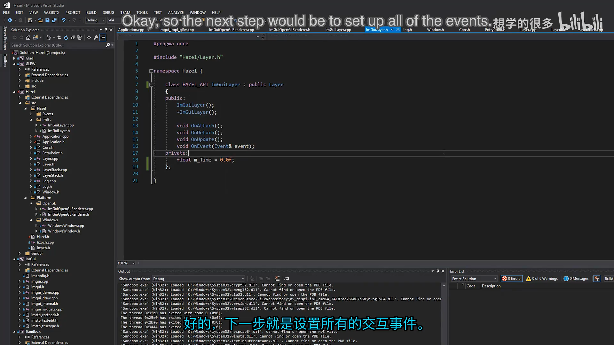
📷 根据 ImGui GLFW 后端的回调实现键盘和鼠标交互
回到原视频 (00:25:11)
14. 当前实现的边界
本讲的目标是“先让它工作”，因此存在明确的技术债：
14.1 直接依赖 OpenGL
ImGui 的绘制数据直接交给 OpenGL3 后端，没有经过 Hazel Renderer。未来 Renderer 成熟后，应替换为 Hazel 的绘制接口。
14.2 直接依赖 GLFW
ImGuiLayer 暂时包含 GLFW，并使用 GLFW 的时间和键码。这破坏了平台抽象。
14.3 临时键映射
键映射直接来自 ImGui GLFW 示例。最终应转换为 Hazel 自己的键码。
14.4 事件尚未接入
本节只验证渲染链路。没有事件同步时，Demo Window 只是静态画面，无法交互。
14.5 Application 单例
当前增加单例是为了快速取得 DisplaySize。它解决眼前问题，但也把“一个进程只有一个 Application”的限制写进运行时约束。
14.6 OnDetach 尚未清理资源
ImGuiLayer::OnDetach() 和析构函数都是空的，没有关闭 OpenGL3 后端或销毁 ImGui Context。后续需要补齐资源释放，避免长期运行时留下全局状态。
这些限制不是最终设计，而是为下一阶段提供可运行的调试基础。
15. 本节结论
本节完成了 Hazel 的第一次真正 UI 渲染：
- 用 Git 子模块引入 Dear ImGui；
- 用 Premake 编译并链接 ImGui；
- 创建继承 Layer 的 ImGuiLayer；
- 给 ImGuiLayer 增加
HAZEL_API导出，使 Sandbox 能跨 DLL 创建它； - 在
OnAttach()初始化 ImGui Context、键码映射和 OpenGL3 示例渲染器； - 在
OnUpdate()先同步 DisplaySize 和 DeltaTime，再执行 NewFrame、Render 和 RenderDrawData； - 用 Application 单例和 GetWindow 设置 DisplaySize；
- 修复 Application 入栈入口未调用 OnAttach 的生命周期缺陷；
- 将 ImGuiLayer 作为 Overlay 显示 Demo Window。
虽然这是临时 hack，但它让 Hazel 第一次拥有了可视化调试界面。接下来先补全 ImGui 输入事件，再逐步把渲染从直接 OpenGL 重构到 Hazel Renderer。